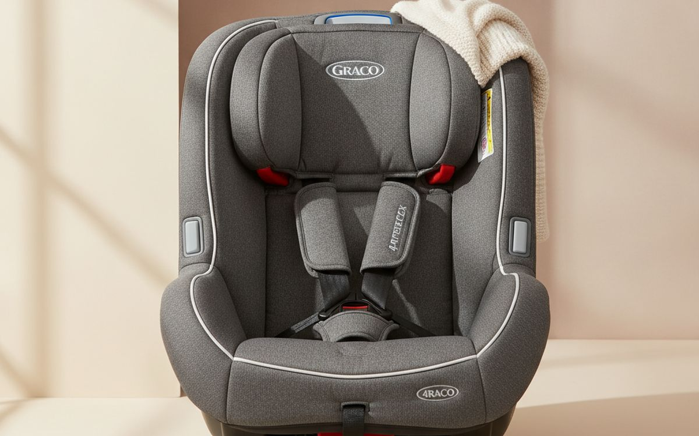
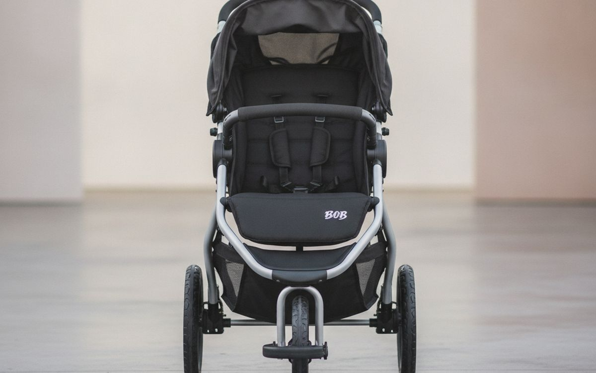
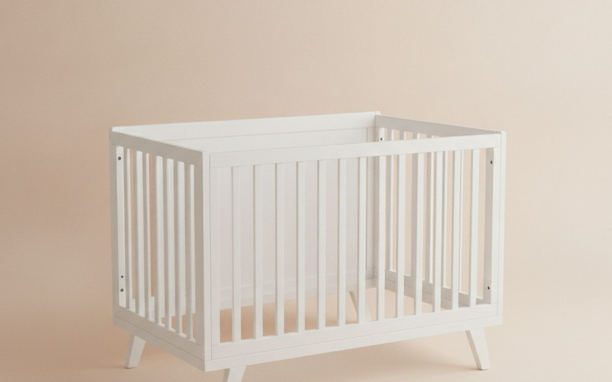
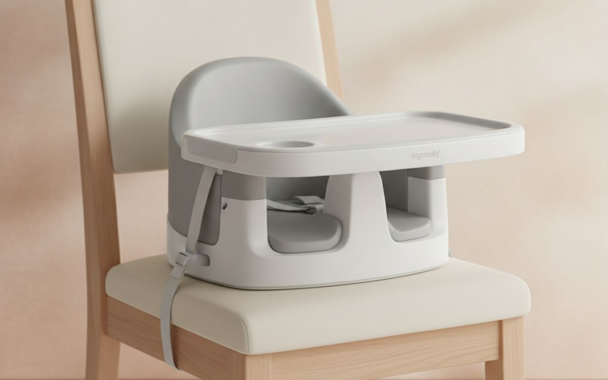
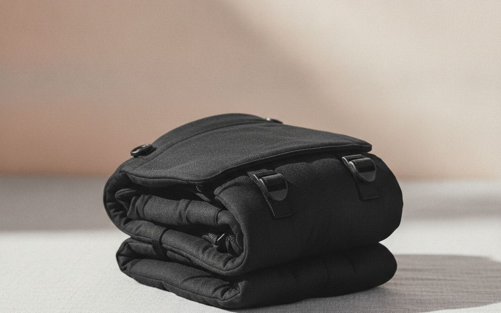
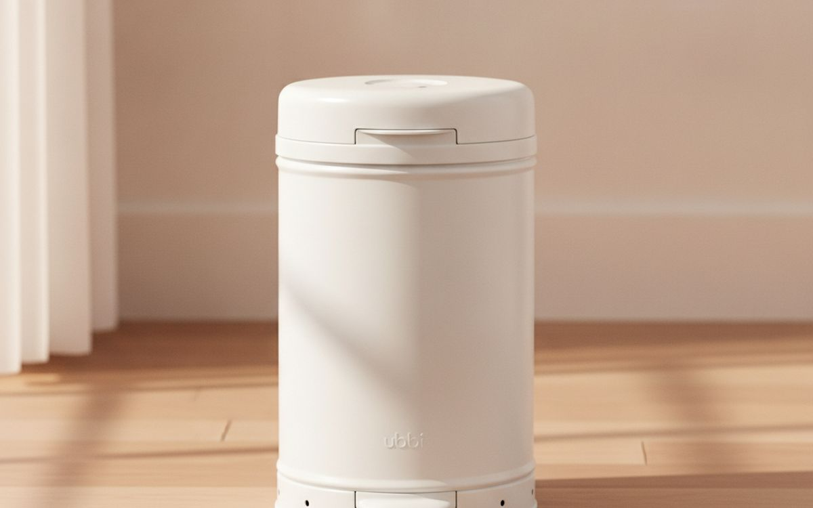
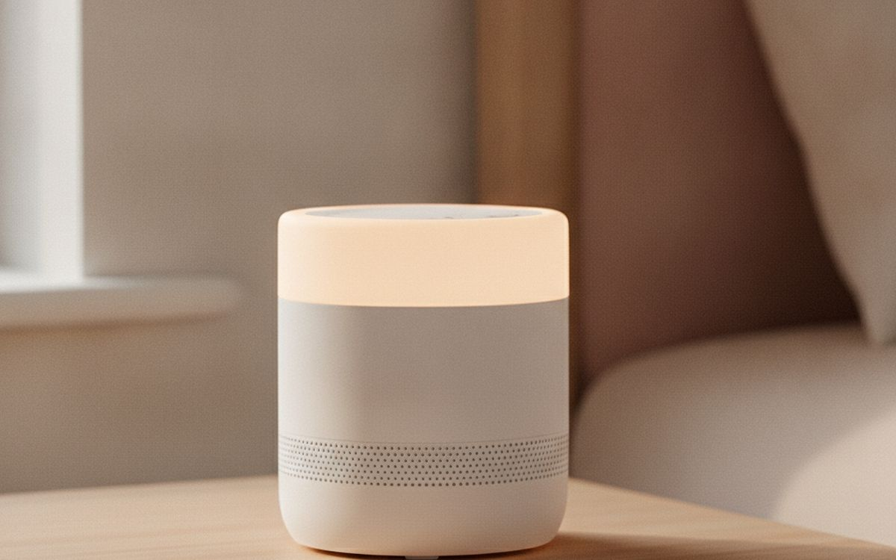
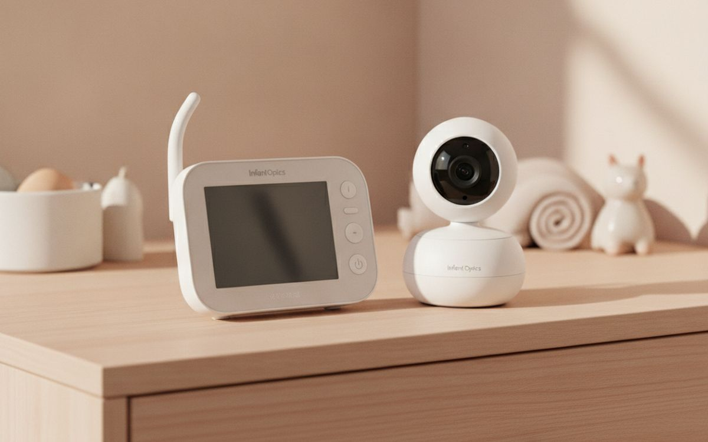
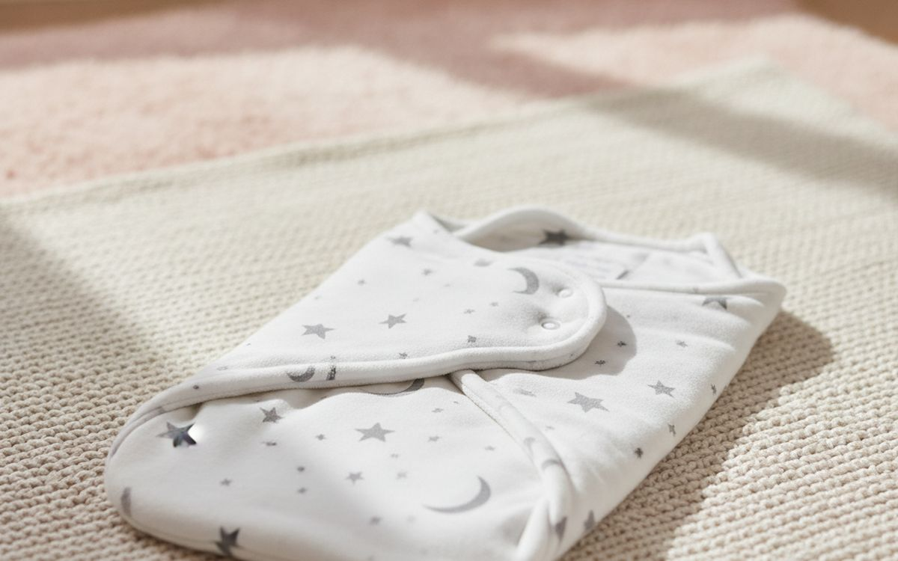
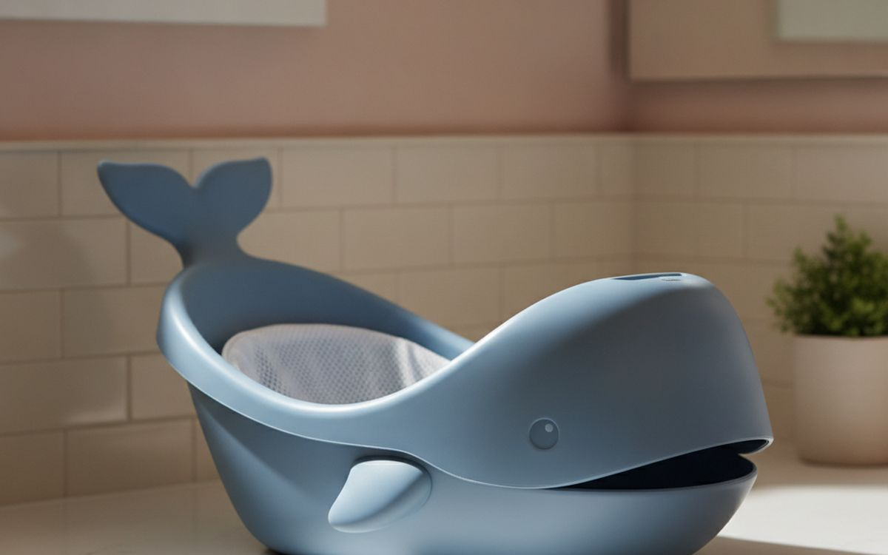

המדריך מתמקד בפריטים שימושיים ועמידים לתינוק, ומפריד בין כלים נחוצים לגימיקים קצרי מועד.
הכניסה לעולם מוצרי התינוקות יכולה להרגיש כמו כניסה לשוק מבלבל. כל פריט מבטיח לפשט את החיים, להבטיח נוחות או להאיץ את ההתפתחות. נפח הבחירה העצום, שלעיתים קרובות מלווה בפניות רגשיות, עלול להוביל לקניית דברים שנעשה בהם שימוש נדיר או שגדלים מהם במהירות. קל לצבור יותר ממה שאתם צריכים, ומוצרים רבים טוענים לפתור בעיות שכלל אינן קיימות.
המלכודת היא להאמין שיותר ציוד שווה חוויה טובה יותר עבורכם או עבור התינוק. במקום זאת, חשבו מה באמת תומך בשגרת היומיום ובבטיחות לאורך מספר שנים, ולא רק כמה חודשים. תנו עדיפות לפריטים שמתאימים ככל שהילד גדל ועומדים בתקני בטיחות מבוססים. גישה ספקנית לטענות שיווקיות תשרת אתכם טוב יותר מאשר רדיפה אחרי כל מוצר חדש שיוצא לשוק.
גילוי נאות. הקישורים בעמוד הזה הם קישורי שותפים. אם תקנו דרכם אנחנו עשויים להרוויח עמלה, בלי תוספת עלות לכם. זה לא משפיע על מה שנכנס לרשימה או על הסדר שלו.
איך בחרנו
בחרנו מוצרים על סמך התועלת שלהם, יכולת ההסתגלות שלהם ועמידתם בתקני בטיחות רלוונטיים של ארגונים כמו ה-CPSC וה-JPMA. המחקר שלנו כלל ניתוח של מפרטים זמינים לציבור, ביקורות משתמשים לגבי נקודות כאב והצלחות נפוצות, והערכות מקצועיות. מדריך זה אינו מסתמך על בדיקות מעשיות. במקום זאת, הוא מציע פרספקטיבה מזוקקת על מה שעובד היטב עבור רוב המשפחות ועל הטרייד-אופים הצפויים עם כל המלצה.
השוואה מהירה
המחירים הם הערכה נכון לזמן הכתיבה ומשתנים לעיתים קרובות.
הבחירות

1
כיסא הבטיחות היחיד שתצטרכוGraco 4Ever DLX 4-in-1 Convertible Car Seat
$250-350
כיסא בטיחות זה מיועד להחזיק מעמד מילדות ועד גיל בוסטר, ומתאים לילדים במשקל 4 עד 120 פאונד. הוא עובר מנסיעה נגד כיוון הנסיעה לתינוק, לנסיעה עם כיוון הנסיעה לפעוט, לבוסטר עם משענת גב, ולבסוף לבוסטר ללא משענת גב. המשמעות היא שרכישה אחת מכסה עד עשר שנות שימוש, בתנאי שלא היה מעורב בתאונה. מערכת הרתמה ומשענת הראש מתכווננות יחד, מה שמקל על ההתאמה ככל שהילד גדל. יש להתייחס תמיד למדריך היצרן להתקנה ושימוש נכונים, ולוודא שהוא עומד בתקני הבטיחות המקומיים שלכם למערכות ריסון לילדים.
בעד
- מתאים לארבעה שלבים, אורך חיים ארוך
- התאמות רתמה ומשענת ראש פשוטות
- מערכת התקנה LATCH קלה
נגד
- כבד ומגושם להעברה בין מכוניות
- הבד יכול להתחמם באקלים חם

2
סעו לכל מקום עם התינוקBOB Revolution Flex 3.0 Jogging Stroller
$450-550
עבור משפחות פעילות או כאלה שמתניידות בשטח לא אחיד, עגלת ריצה מציעה מתלים חזקים יותר וגלגלים גדולים יותר מדגמים רגילים. ה-BOB Revolution Flex 3.0 כוללת גובה ידית מתכוונן וגלגל קדמי עם נעילת סיבוב לתמרון במקומות צרים או ליציבות בעת ריצה. למרות שהיא בנויה לריצה, העיצוב שלה הופך אותה גם לעגלה יומיומית יעילה על מדרכות או שבילים. היא יכולה לקלוט כיסאות בטיחות לתינוקות עם מתאם, אם כי ריצה רצינית עם תינוק צריכה לחכות עד שהם יהיו גדולים יותר, בדרך כלל בסביבות גיל 8 חודשים, באישור רופא ילדים.
בעד
- מתלים מעולים לנסיעה חלקה
- ידית מתכווננת לנוחות ההורה
- צמיגי שטח עמידים
נגד
- גדולה וכבדה, תופסת מקום בתא המטען
- יקרה בהשוואה לעגלות בסיסיות

3
מיטה שגדלה עם הילדGraco Benton 4-in-1 Convertible Crib
$180-250
מיטת תינוק ניתנת להמרה מציעה אורך חיים פונקציונלי ארוך יותר ממיטת תינוק רגילה על ידי הפיכתה למיטת פעוט, מיטת יום ומיטה בגודל מלא. ה-Graco Benton מספקת שלוש גבהים למזרן, המתאימים ככל שהתינוק גדל ונעשה נייד יותר, ושומרים עליו בבטחה. קניית מיטת תינוק ניתנת להמרה פירושה שאתם משקיעים פעם אחת ברהיט שיכול לשרת ילד במשך שנים, ונמנעים מרכישות מיטה מרובות. זכרו שערכות ההמרה למיטה בגודל מלא נמכרות בדרך כלל בנפרד. ודאו תמיד שההרכבה נכונה ושהיא עומדת בתקני הבטיחות של ה-CPSC.
בעד
- ניתנת להמרה למיטת פעוט, מיטת יום ומיטה בגודל מלא
- גבהי מזרן מתכווננים
- מבנה עץ עמיד
נגד
- ערכות המרה למיטה בגודל מלא נמכרות בנפרד
- יכולה להיות מאתגרת להרכבה לבד

4
ניקוי קל בארוחותIngenuity SmartClean Toddler Booster
$40-60
במקום כיסא אוכל מגושם וייעודי שתופס מקום על הרצפה, כיסא בוסטר שנקשר לכיסא אוכל רגיל מציע אלטרנטיבה מעשית. ה-Ingenuity SmartClean עשוי מקצף שניתן לניגוב וקל לניקוי, ומתמודד עם תסכול נפוץ מכיסאות אוכל מבד. יש לו מגש נשלף ומערכת רתמה מאובטחת. כיסא בוסטר זה מתאים ברגע שתינוק יכול לשבת ללא עזרה, בדרך כלל בסביבות גיל 6 חודשים, וניתן להשתמש בו היטב עד שנות הפעוטות. גודלו הקומפקטי גם הופך אותו לקל לנשיאה לארוחות מחוץ לבית.
בעד
- מתחבר לרוב כיסאות האוכל
- חומר קצף שניתן לניגוב וקל לניקוי
- קומפקטי ונייד לנסיעות
נגד
- המגש אינו מתאים למדיח כלים
- חלק מהילדים עלולים לגדול מהר מדי מהמגש

5
שמרו על התינוק קרוב בנוחותErgobaby Omni 360 All-Position Baby Carrier
$150-190
מנשא תינוק טוב משחרר את הידיים תוך שמירה על התינוק מאובטח וקרוב. ה-Ergobaby Omni 360 מאפשר את כל מצבי הנשיאה – פנים-חוץ, פנים-פנים, צד, וגב – ואינו דורש מנח תינוק, מה שהופך אותו לשימושי מלידה (7 פאונד) ועד 45 פאונד. העיצוב הארגונומי שלו תומך בתינוק בתנוחת 'M' טבעית, החשובה להתפתחות הירכיים. עבור הלובש, תמיכה מותנית ורצועות כתף מרופדות מפזרות משקל ביעילות, ומפחיתות עומס בשימוש ממושך. ודאו תמיד שמערכת הנשימה של התינוק פתוחה וגלויה.
בעד
- תומך בכל מצבי הנשיאה
- אין צורך במנח תינוק, מלידה
- תמיכה מותנית טובה למשתמש
נגד
- יכול להרגיש מגושם, במיוחד למשתמשים קטנים יותר
- נקודת מחיר גבוהה יותר מנשאים בסיסיים רבים

6
מכיל ריחות חיתוליםUbbi Steel Diaper Pail
$70-90
בניגוד לפחי חיתולים מפלסטיק שיכולים לספוג ריחות לאורך זמן, פח Ubbi עשוי מפלדה, שהיא לא נקבובית ועוזרת להכיל ריחות בצורה יעילה יותר. הוא משתמש בשקיות זבל מטבח סטנדרטיות, ונמנע מהצורך בשקיות מילוי יקרות ופטנטיות שרבות ממערכות אחרות דורשות. מנגנון המכסה המחליק שלו יוצר גם אטימה הדוקה. בעוד שאף פח חיתולים לא יכול לבטל את כל הריחות, במיוחד עם חיתולים מלוכלכים מאוד, העיצוב של Ubbi הוא אחד היעילים יותר בהפחתת נוכחותם בחדר. ריקון קבוע עדיין חיוני.
בעד
- מבנה פלדה עמיד בפני ספיגת ריחות
- משתמש בשקיות זבל סטנדרטיות, ללא מילויים מיוחדים
- מכסה מחליק ואטום
נגד
- יכול להיות קשה לנקות את הפנים לחלוטין
- המכסה המחליק יכול לפעמים להיתקע

7
צלילי שינה והשכמהHatch Rest+ Sound Machine
$80-100
מכונת צלילים יכולה לעזור למסך רעשי בית שעשויים להפריע לשינה, וה-Hatch Rest+ הולכת רחוק יותר על ידי שילוב מכונת צלילים, מנורת לילה ומחוון זמן-השכמה. ספריית הצלילים שלה כוללת רעש לבן, שירי ערש וצלילי טבע. ניתן להתאים את האור בצבע ובהירות, ומשמש כמנורת לילה עדינה להחלפות או האכלות באמצע הלילה. עבור פעוטות גדולים יותר, תכונת 'זמן-השכמה' משתמשת באורות כדי לסמן מתי מותר לקום מהמיטה, מה שיכול לתמוך בעצמאות שינה. השליטה נעשית באמצעות אפליקציית סמארטפון.
בעד
- משלב מכונת צלילים, מנורת לילה, שעון
- צבעים ובהירות ניתנים להתאמה אישית
- שליטה באפליקציית סמארטפון לנוחות
נגד
- תלוי באפליקציית סמארטפון לפונקציונליות מלאה
- יכול להיות יקר עבור מכונת צלילים

8
ניטור וידאו אמיןInfant Optics DXR-8 PRO Video Baby Monitor
$170-200
לשקט נפשי, מוניטור תינוקות וידאו ייעודי מספק חיבור מקומי ישיר מבלי להסתמך על Wi-Fi, מה שמפחית חששות אבטחה פוטנציאליים הקשורים למכשירים המחוברים לאינטרנט. ה-Infant Optics DXR-8 PRO כולל מצלמה ורזולוציית תצוגה משופרות בהשוואה לקודמו. פונקציות מפתח כוללות פאן, הטיה וזום מרחוק, המאפשרים לך להתאים את התצוגה מבלי להיכנס לחדר. יש לו גם דיבור דו-כיווני ואפשרויות עדשה מתחלפות. בעוד שמוניטור הוא עזר, זכור שהוא עזר, לא תחליף לשיטות שינה בטוחות ובדיקות סדירות.
בעד
- חיבור מאובטח, ללא Wi-Fi
- מצלמת פאן, הטיה וזום מרחוק
- איכות וידאו ושמע טובה
נגד
- חיי הסוללה ביחידת ההורה יכולים להשתנות
- הטווח עשוי להיות מוגבל בבתים גדולים

9
שק שינה עוטף ובטוחHalo SleepSack Swaddle
$20-30
עיטוף יכול לעזור לתינוקות להרגיש בטוחים ולמנוע את רפלקס ההבהלה שיכול להעיר אותם. ה-Halo SleepSack Swaddle מציע עיצוב מתכוונן המאפשר עיטוף זרועות פנימה, ידיים לפנים, או זרועות החוצה, מה שהופך אותו להתאמה ככל שהתינוק גדל ומתפתח. הוא מיועד להחליף שמיכות רופפות בעריסה, שהן סכנת חנק. עשוי מבד רך, הוא מספק חום מבלי להתחמם יתר על המידה. ודאו תמיד שהעיטוף אינו הדוק מדי, במיוחד סביב הירכיים, ועברו לשק שינה עם זרועות בחוץ כאשר התינוק מראה סימני התהפכות.
בעד
- מחליף שמיכות רופפות, שינה בטוחה יותר
- מתכוונן לעיטוף זרועות פנימה או החוצה
- סגירות ולקרו קלות לשימוש
נגד
- התינוק יכול לגדול ממנו במהירות
- הוולקרו יכול להיות רועש במהלך החלפות

10
אמבטיה פשוטה ותומכתSkip Hop Moby Bathtub
$30-50
אמבטיית תינוק פשוטה ומעוצבת היטב הופכת את זמן האמבטיה לקל ובטוח יותר, במיוחד עבור תינוקות שזקוקים לתמיכה. ה-Skip Hop Moby כולל זנב לוויתן מרופד המשמש כמשענת ראש מרופדת ופנים מונע החלקה לבטיחות. ניתן להשתמש בו בכיור או באמבטיה למבוגרים. העיצוב מבטיח מיקום נכון לתינוקות, ואז מאפשר יותר מקום כשהם גדלים לתינוקות שיכולים לשבת. הימנעו מאמבטיות מסובכות מדי עם סילוני מים או מקלחות; אלה לעיתים קרובות מוסיפים מעט ערך ויכולים להיות קשים יותר לניקוי. השגחה בזמן האמבטיה היא חיונית, ללא קשר לעיצוב האמבטיה.
בעד
- עיצוב ארגונומי תומך בתינוקות
- פנים מונע החלקה לבטיחות
- מתאים לרוב הכיורים והאמבטיות
נגד
- יכול לתפוס מקום אחסון משמעותי
- תקע הניקוז יכול להיות קשה לפתיחה
שאלות נפוצות
האם אני צריך עריסה נפרדת לתינוק שלי?
עריסה מספקת מרחב שינה קטן יותר לתינוק, ולעיתים קרובות מאפשרת לו לישון בחדר ההורים בחודשים הראשונים. למרות שזה נוח לקרבה, זה לא הכרחי לחלוטין. מיטת תינוק מיועדת לשינה בטוחה מהיום הראשון, ומשפחות רבות בוחרות למקם את מיטת התינוק שלהן ישירות בחדר השינה שלהן. עריסות הן פתרון לטווח קצר, שבדרך כלל גדלים ממנו בגיל 4-6 חודשים, מה שאומר שתעברו למיטת תינוק בכל מקרה. אם מקום או קרבה הם דאגה עיקרית, עריסה פשוטה ויציבה העומדת בתקני הבטיחות הנוכחיים יכולה להיות שימושית, אך אל תרגישו מחויבים לקנות אחת אם מיטת תינוק עובדת עבורכם.
האם מחממי מגבונים או סטריליזטורים לבקבוקים שווים קנייה?
פריטים אלה נשמעים לעיתים קרובות מושכים אך לעיתים רחוקות מוכיחים את עצמם כחיוניים. מחממי מגבונים יכולים להיות כר גידול לחיידקים אם לא מנקים אותם בקפדנות, ומגבון קר בדרך כלל לא מפריע לתינוק יותר מאשר לרגע קצר. עבור בקבוקים, שטיפה יסודית במים חמים וסבון מספיקה בדרך כלל לניקוי. עיקור חשוב לתינוקות פגים או לבעלי מערכת חיסונית מוחלשת, אך עבור תינוקות בריאים ומלאי חודשים, שיטות ניקוי סטנדרטיות מספקות. התמקדו בניקיון, לא בגאדג'טים מיוחדים שמוסיפים שלבים ללא תועלת משמעותית.
כמה בגדי תינוקות אני באמת צריך עבור תינוק חדש?
תינוקות גדלים במהירות וזקוקים להחלפות תכופות עקב פליטות או דליפות חיתולים. התנגדו לדחף לקנות יותר מדי בגדים במידות תינוק חדש או 0-3 חודשים. שאפו לכ-5-7 גופיות או סרבלים, כמה זוגות מכנסיים, וכמה סרבלים רב-תכליתיים. תנו עדיפות לנוחות וקלות החלפה, עם תיקתקים או רוכסנים פשוטים. התמקדו בפריטים מעשיים שניתן לשכבות, ולא בתלבושות מפוארות. כביסה כל כמה ימים מעשית יותר מאשר תחזוקת מלתחה ענקית שתגדלו ממנה תוך שבועות.
האם עלי לקנות רק מוצרי תינוקות אורגניים?
המונח 'אורגני' מרמז לעיתים קרובות על רמה גבוהה יותר של בטיחות או תועלת בריאותית, אך עבור מוצרי תינוקות רבים, הראיות התומכות בטענות אלו חלשות או נעדרות. כותנה אורגנית, למשל, מפחיתה חשיפה לחומרי הדברה בייצור שלה אך אינה הופכת בגד לבטוח יותר עבור התינוק שלכם מכותנה רגילה. עם מזון, תוויות אורגניות מבטיחות פרקטיקות חקלאיות מסוימות, אך ההבדל התזונתי לרוב זניח. התמקדו במוצרים העומדים בתקני בטיחות מבוססים, נקיים מסכנות ברורות, ומתאימים לתקציב שלכם. תנו עדיפות לפונקציונליות ובטיחות מוכחת על פני תווית 'אורגנית' בלבד.
← כל המדריכים
הגשנו בקשה להצטרף לתוכנית השותפים של אמזון. איננו שותפים של אמזון עדיין, ואיננו מרוויחים דבר מקישורים לאמזון בשלב זה. כשותפים של עליאקספרס אנחנו מרוויחים עמלה מרכישות מזכות. המחירים והזמינות נכונים לזמן הפרסום ועשויים להשתנות.